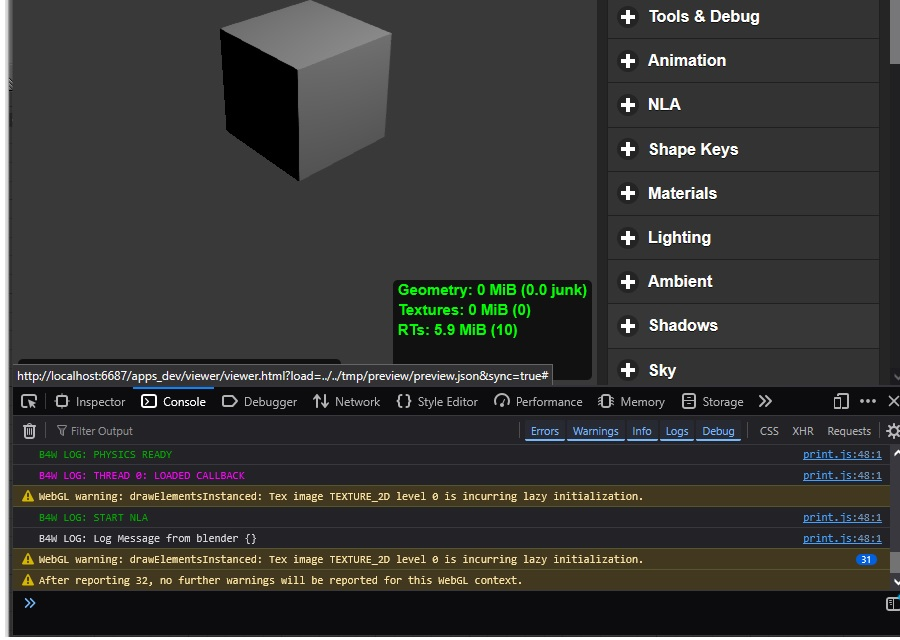
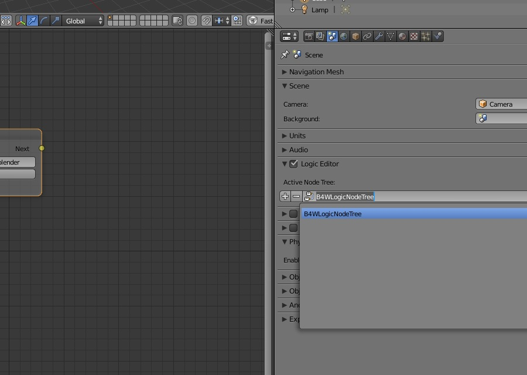
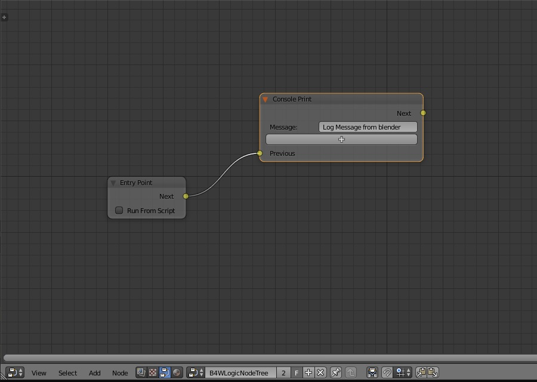

Neste Tutorial Adicionamos os Controles de Lógica no Cenário Interativo, com Árvore de Nodes.
Neste Tutorial você verá uma mensagem no terminal de console de seu navegador para você poder analizar e debugar o código inspecionando variáveis e propriedades dos objetos, como você pode ver na imagem abaixo:

Apliquemos a Engine de render para Blend4Web e em seguida acionamos o painel de Propriedades, veja que na painel Render há algumas outras opções que são exclusivas do Blend4Web, ou seja, não têm nas versões do Blender oficial, apenas pelo Add-on.

Na painel de Propriedades acione a guia Scene e veja que há uma caixa de chegagem de rótulo Logic Editor, marque esta caixa e em seguida expanda o widget. Clique no [+] para adiciona uma nova árvore de Nodes aplicável à interface do Blend4Web.
Expanda uma grande área editável da área gráfica do Blender para você poder editar a árvore de nodes, e nesta área selecione o painel de Node Editor. Selecione no Node Editor a árvore de Nodes de mesmo nome com que você criou anteriormente ao clicar no [+] do Logic Editor.
Para adicionar novos nós clique em Add na barra de Menus do painel Node Editor, e ligue os nós uns aos outros clicando nos terminais em que há uma bolotinha amarela, clicando de uma de origem e soltando na que desejas ligar.
Uma das maneiras mais simples de verificar o funcionamento de Blend4Web é printar no Console inspecionador de código do Browser. Para fazer isso adicione no painel de Árvore de Nós o Nó Entry Point -> seguido de Console Print, deve ser ligado de Next a Previous do Nó Console Print.
Pressione Fast Preview e inspecione o Browser que você verá uma mensagem entre as várias do Console, verifique que o texto da mensagem é justamente o que você digitou.
Se desejas mostrar uma mensagem a cada milisegundo diretamente no terminal, para atualizar o valor de alguma variável em tempo de execução Após o Next do Console Print ligue em um Rerout e ligue o Rerout no início de Prévious do Console Print.

O Logic Editor e a Árvore de Nós poderá ficar semelhante ao que você pode ver nesta imagem acima, então após concluir sua edição clique em Fast Preview no menu da 3D View, ou clique em Fast Preview na Guia Scene do Painel de Propriedades.
Para inspecionar e verificar a mensagem que você digitou no campo do Nó, vá no Browser, carregue o projeto e pressione a combinação de teclas [Ctrl] + [Shift] + [I] para exibir o inspecionador do Console, ou use a combinação de teclas do navegador que estiveres usando.
Para Voltar ao Menu inicial:
<< Voltar
O resultado final você pode encontrar aqui: